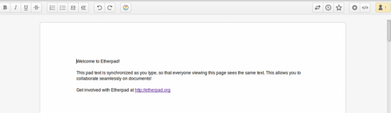
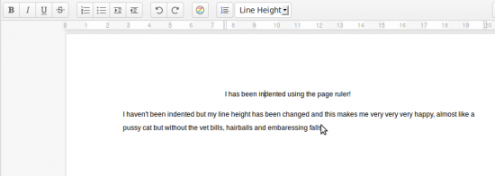
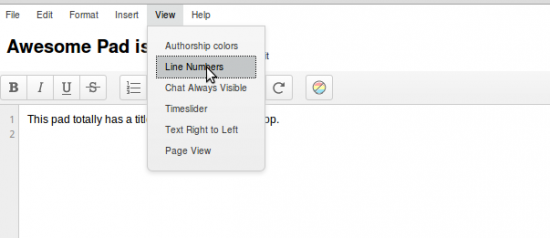
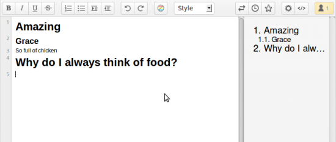

Top 10 Etherpad Plugins 2014

Etherpad changed a lot in 2013, the new functionality funded by various companies has mostly been released open source and this has meant a lots of new jobs and work availability for plugin developers. Firstly let's congratulate Etherpad on an amazing 2013, we're really proud of everyones achievements so far and let's hope 2014 can be yet another fantastic year.
Etherpad can do that?!?!?
1. Page View
npm install ep_page_view
{kind=link}
2. Print a pad
 Printing a pad before used to leave the toolbar and chat icon on, with this plugin all other editor contents is removed leaving just the pad contents so you can get a lovely printable representation of your pad. Printing also supports page breaks so if you have the Page View plugin installed get breaking those pages up and printing them out. Top tip: Printing is bad, don't do it unless you really need to, it is 2014 after all!
Printing a pad before used to leave the toolbar and chat icon on, with this plugin all other editor contents is removed leaving just the pad contents so you can get a lovely printable representation of your pad. Printing also supports page breaks so if you have the Page View plugin installed get breaking those pages up and printing them out. Top tip: Printing is bad, don't do it unless you really need to, it is 2014 after all! npm install ep_print
3. Rich Text Editing
 By using the Headings, Font Family, Font Color and Font Size, SuperScript and Subscript plugins you can add rich text editing to your pads. Spot the obvious mistake in the image..
By using the Headings, Font Family, Font Color and Font Size, SuperScript and Subscript plugins you can add rich text editing to your pads. Spot the obvious mistake in the image.. npm install ep_headings2 ep_font_color ep_font_family ep_font_size ep_superscript ep_subscript
4. Page Ruler, Line Height
npm install ep_page_ruler ep_line_height
{kind=link}
5. File Menu Toolbar and Pad Title
npm install ep_aa_file_menu_toolbar ep_set_title_on_pad
{kind=link}
6. Admin Pads
A way to admin and manage pads using Etherpad. npm install ep_admin_pads
7. Markdown
Use Markup/Markdown stylee editing in Etherpad npm install ep_markdown
8. Real Time Chat
Get real time chat updates. npm install ep_real_time_chat
9. Table of Contents
npm install ep_table_of_contents ep_headings2
{kind=link}
10. Lots more..
I ran out of space but here are some more awesome plugins you should check out.. ep_clear_formatting - Clear the formatting/attributes on a selection ep_sticky_attributes - See what attributes are applied to a selection ep_copy_paste_select_all - Put a copy / paste / select all item in the file menu (requires file menu) ep_special_characters - Insert Special characters into a pad ep_define - Define and Research a selected word (requires file menu) ep_text_to_speech - Speak a selection from a pad (requires file menu) ep_comments - Apply comments to a pad